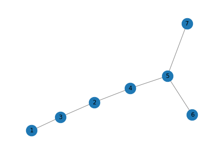
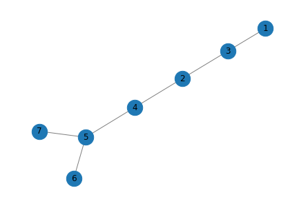
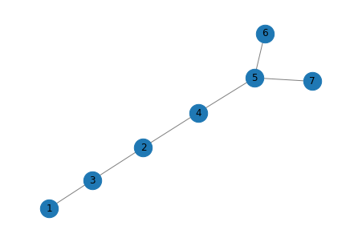
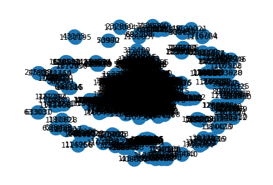

import networkx as nx
edges = [[1,3],[2,3],[2,4],[4,5],[5,6],[5,7]]
G = nx.from_edgelist(edges)
preds = nx.resource_allocation_index(G,[(1,2),(2,5),(3,4)])
print(list(preds))
draw_graph(G)[(1, 2, 0.5), (2, 5, 0.5), (3, 4, 0.5)]
신록예찬
February 10, 2023
import networkx as nx
edges = [[1,3],[2,3],[2,4],[4,5],[5,6],[5,7]]
G = nx.from_edgelist(edges)
G.nodes[1]["community"] = 0
G.nodes[2]["community"] = 0
G.nodes[3]["community"] = 0
G.nodes[4]["community"] = 1
G.nodes[5]["community"] = 1
G.nodes[6]["community"] = 1
G.nodes[7]["community"] = 1
preds = nx.cn_soundarajan_hopcroft(G,[(1,2),(2,5),(3,4)])
print(list(preds))
draw_graph(G)[(1, 2, 2), (2, 5, 1), (3, 4, 1)]
import networkx as nx
edges = [[1,3],[2,3],[2,4],[4,5],[5,6],[5,7]]
G = nx.from_edgelist(edges)
G.nodes[1]["community"] = 0
G.nodes[2]["community"] = 0
G.nodes[3]["community"] = 0
G.nodes[4]["community"] = 1
G.nodes[5]["community"] = 1
G.nodes[6]["community"] = 1
G.nodes[7]["community"] = 1
preds = nx.ra_index_soundarajan_hopcroft(G,[(1,2),(2,5),(3,4)])
print(list(preds))
draw_graph(G)[(1, 2, 0.5), (2, 5, 0), (3, 4, 0)]
import networkx as nx
import pandas as pd
edgelist = pd.read_csv("cora.cites", sep='\t', header=None, names=["target", "source"])
G = nx.from_pandas_edgelist(edgelist)
draw_graph(G)
from stellargraph.data import EdgeSplitter
edgeSplitter = EdgeSplitter(G)
graph_test, samples_test, labels_test = edgeSplitter.train_test_split(
p=0.1, method="global"
)** Sampled 527 positive and 527 negative edges. **edgeSplitter = EdgeSplitter(graph_test, G)
graph_train, samples_train, labels_train = edgeSplitter.train_test_split(
p=0.1, method="global"
)** Sampled 475 positive and 475 negative edges. **from node2vec import Node2Vec
from node2vec.edges import HadamardEmbedder
node2vec = Node2Vec(graph_train)
model = node2vec.fit()
edges_embs = HadamardEmbedder(keyed_vectors=model.wv)
train_embeddings = [edges_embs[str(x[0]),str(x[1])] for x in samples_train]Computing transition probabilities: 100%|██████████| 2708/2708 [00:00<00:00, 4284.35it/s]
Generating walks (CPU: 1): 100%|██████████| 10/10 [01:24<00:00, 8.43s/it]from sklearn import metrics
y_pred = rf.predict(test_embeddings)
print('Precision:', metrics.precision_score(labels_test, y_pred))
print('Recall:', metrics.recall_score(labels_test, y_pred))
print('F1-Score:', metrics.f1_score(labels_test, y_pred))Precision: 0.8557114228456913
Recall: 0.8102466793168881
F1-Score: 0.8323586744639375import matplotlib.pyplot as plt
def draw_graph(G, node_names={}, node_size=500):
pos_nodes = nx.spring_layout(G)
nx.draw(G, pos_nodes, with_labels=True, node_size=node_size, edge_color='gray', arrowsize=30)
pos_attrs = {}
for node, coords in pos_nodes.items():
pos_attrs[node] = (coords[0], coords[1] + 0.08)
#nx.draw_networkx_labels(G, pos_attrs, font_family='serif', font_size=20)
plt.axis('off')
axis = plt.gca()
axis.set_xlim([1.2*x for x in axis.get_xlim()])
axis.set_ylim([1.2*y for y in axis.get_ylim()])
plt.show()